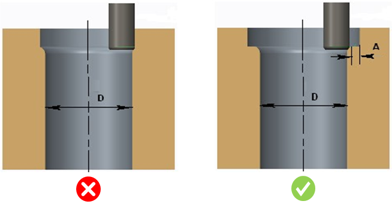
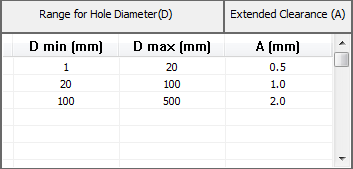

このルールは、フィレットに対する部品のクリアランスが構成された制限値の範囲内にあるかどうかをチェックします。
フィレットの加工には標準工具を使用する必要があります。フィレットに対して拡張クリアランスが確保されていない場合、加工には専用工具が必要となり、その結果、追加コストが発生します。
標準工具を使用するためには、フィレットの拡張クリアランスは構成された値に従って設定する必要があります。

穴径および拡張クリアランスのデフォルト値は、次の図に示されています。
